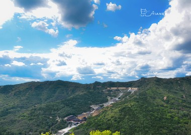
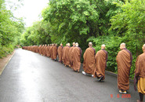
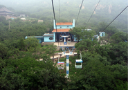

奉国寺位于中国辽宁省锦州市义县，始建于辽开泰九年（1020年），初名咸熙寺，后易名奉国寺。奉国寺占地面积约6万平方米。
辽金元时期是奉国寺的鼎盛时期，到明清时期仅存大雄宝殿，清代续建六角钟亭、四角碑亭、无量殿、牌坊、小山门和西宫禅院。奉国寺是中国国内现存辽代三大寺院之一，其标志性古建筑——大雄殿是古代遗存最大的佛殿，殿内有世界上最古老、最大的泥塑彩色佛像群。 [2] 奉国寺内主体建筑大雄殿及寺院整体，上乘唐代遗风，下启辽、金等寺院布局，是辽金寺院中最具典型的例证。其中，大雄殿是辽代佛教建筑的最高成就，代表了十一世纪中国建筑的最高水平。 1961年被中华人民共和国国务院公布为第一批全国重点文物保护单位。 [3] 2009年被中国国家旅游局评为AAAA级旅游景区。
奉国寺总体布局与独乐寺和大同善化寺基本一致。寺内还有金、元、明、清重修奉国寺碑十余甬。山门、牌楼、无量殿等均为清代所建。奉国寺分庙门，中殿，大雄宝殿。一侧有出土文物展览。奉国寺是典型的汉传佛教寺院布局，占地面积约6万平方米，座北朝南，沿中轴线依次为外山门、内山门、牌坊、天王殿、大雄殿。大雄殿东侧是财神殿、菩萨殿，西侧是西方三圣殿和义县出土文物展室，天王殿西侧是景区购物中心。整个寺院有佛殿5座，供奉佛、菩萨共计44尊，其中：过去七佛祖七尊、男像倒坐观音一尊、哼哈二将2尊、胁侍菩萨14尊、弥勒佛一尊、韦驮一尊、天王四尊、菩萨四尊、财神七尊、西方三圣佛三尊。
建筑学家梁思成曾发表学术报告，称辽代寺院为“千年国宝、无上国宝、罕有的宝物。奉国寺盖辽代佛殿最大者 也。” 文物专家杜仙州在调查报告中赞誉“奉国寺大雄殿木构建筑，千年仍平直挺健，是中国建筑史一项极为光辉的成就。辽代七佛像高大庄严，权衡匀整，柔逸俊秀，神态慈祥，极为壮丽。梁架上飞天面相丰颐美悦，色调鲜明绚丽，是国内极为罕见的辽代建筑彩画实例。” 鉴赏家、文物专家杨仁恺在《中国书画》一书中评价辽代彩绘时指出“奉国寺大雄殿梁架上彩绘依然保存很好，光彩夺目，其中的飞天造型特佳，犹存唐代风标，甚为稀见。” 主持过奉国寺维修工程的国家文物局古建筑教授级高级工程师杨烈，曾评价奉国寺大雄殿为“中国古代辽（宋）以前保存至今最为宏大和最为完整的单檐四阿顶木构建筑，建筑规模是中国第一大雄宝殿。” 古建筑史学家曹汛说：“大殿九间是佛教建筑顶了天的极限，奉国寺七佛殿九间，全国古刹千百座，奉国寺大雄殿是穷极伟丽的。” 学者周德仓发表文章对奉国寺给予极高的赞誉：“在相当长的历史时期，中国东北地区并不是中华文化中心，但是，奉国寺却以它突出的特色和完美的遗存，使辉煌的中华文化通过建筑、雕塑、彩绘等艺术形式展现给世人。